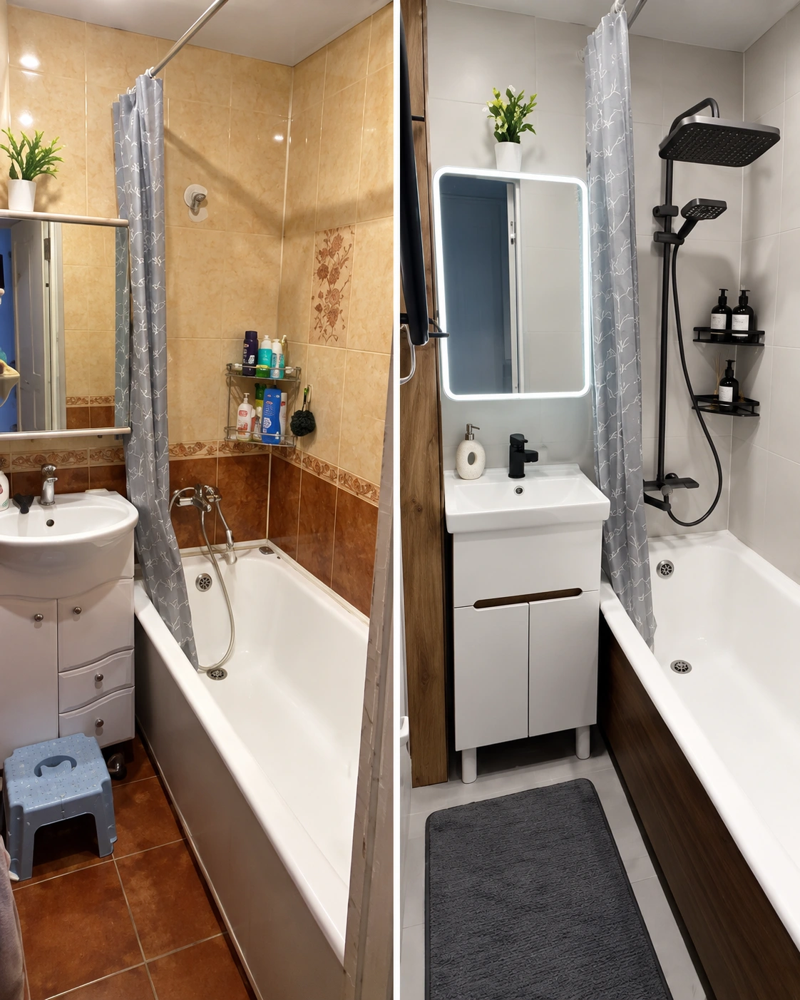
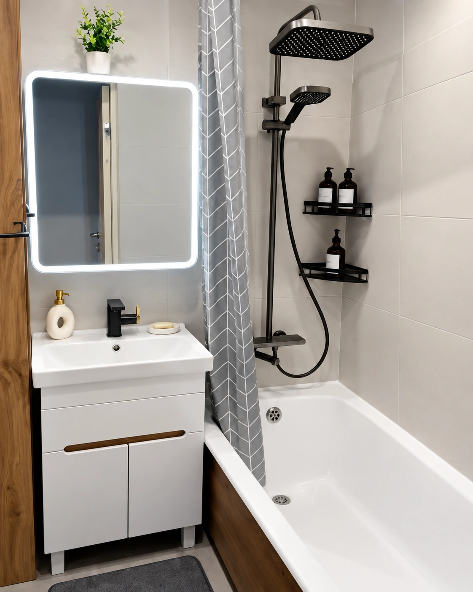
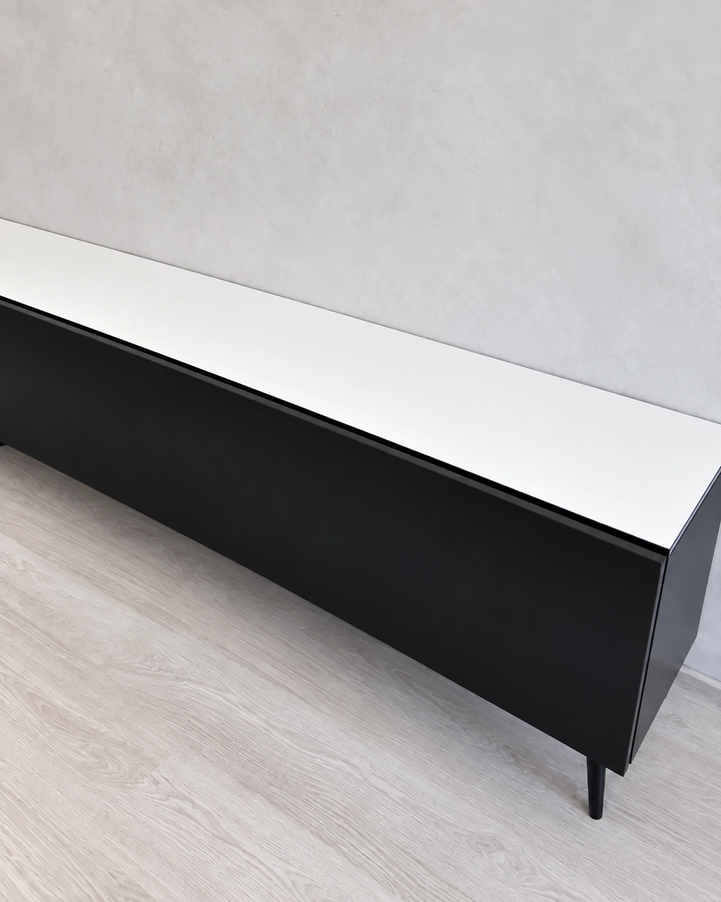
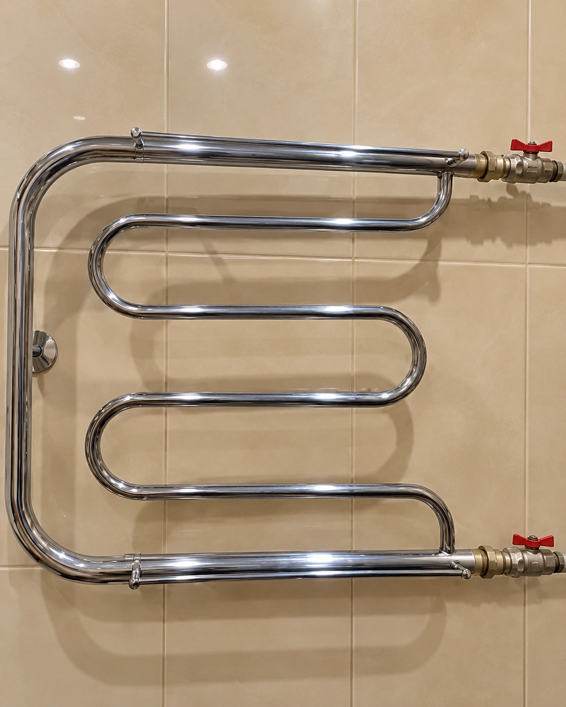

До ПослеВанная · передвинь ползунок, чтобы сравнить

Переделываю своими руками
Крашу старую плитку, переделываю мебель и закрываю трубы съёмными коробами. Здесь — мои работы, а в блоге — как всё было сделано.
Смотреть переделки →Старую плитку не обязательно сбивать, а надоевшую тумбу — выбрасывать. Показываю свои переделки: с чего начинаю, какие материалы использую и что получается в итоге.
Instagram ↗
До ПослеВанная · передвинь ползунок, чтобы сравнить

До ПослеТумба · до и после переделки
Выбери вкладку, чтобы посмотреть работу поближе.
Бежевую плитку перекрасили в светлый цвет, оставив её на месте. В блоге рассказываю, как подготовить поверхность и чем красить.
Та же ванная: светлая плитка, новая тумба и зеркало с подсветкой.
Закрывает трубы у раковины. При необходимости его можно снять.
Чёрные фасады и отделка под дерево — вот как тумба смотрится в комнате.
Делюсь процессом, фотографиями и материалами, которыми пользуюсь.
В Instagram делюсь работами и отвечаю на вопросы.
Про плитку, мебель, короба и другие домашние переделки.

Названия материалов и этапы работы — в публикациях о каждой переделке.
Есть идея для переделки?
Да, свою плитку в ванной мы перекрасили. Важно подготовить поверхность и выбрать грунт и краску для плитки. Материалы и этапы показываю в блоге.
Да, короб у раковины съёмный. Его можно убрать, если понадобится добраться до труб.
В моём Instagram, в публикациях о переделках. Если не найдёшь нужное — напиши, о какой работе речь.
Пришли в Instagram фото и расскажи, что хочешь изменить.